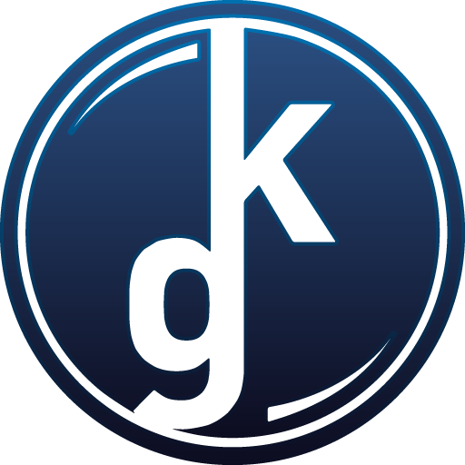

Содержание раздела:
Рабочие проекты

Оптимизация коммуникации между отделами в Kama Games
Контекст
Над флагманским продуктом в компании работало несколько отделов, закрывающих отдельную компетенцию: разработка, дизайн, маркетинг, аналитика и разумеется геймдизайн. Последние в лице продюсеров занимались проработкой новых фичей. В зависимости от сложности фичи и стадии ее реализации, различные отделы подключали к работе в рамках своих компетенций.
В компании были внедрены инструменты Atlassian: Jira и Confluence. Jira в основном использовалась внутри команд по прямому назначению, однако культуры ведения документации в Confluence не было.
Проблема
В процессе погружения в процессы команд и знакомства с руководителями, я определил для себя несколько основных "болей":
- Отсутствие единого источника данных: документацию по фиче было тяжело найти. Это касалось как новых, так и старых фичей, которые по разным причинам были нужны командам.
- Отсутствие понимания плана проводимых работ: командам нужно было понимать наполнение предстоящих релизов для планирования работ над продуктом.
- И как следствие первых двух пунктов: переизбыток коммуникаций у продюсеров. Командам, которые были вовлечены в работу, приходилось постоянно уточнять требования по фичам. Уточнялись сроки, отдельно взятые части документации (которую еще нужно было не потерять) и статус выполнения работы у других команд, которые могли блочить реализацию.
Решение
В процессе знакомства с руководителями отделов я
Результат
Мои задачи и достижения в проекте